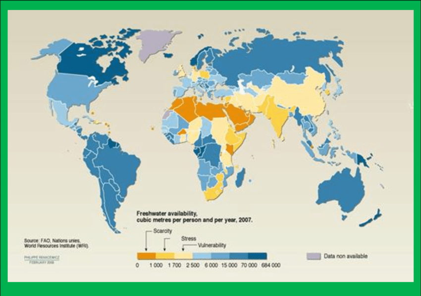

What is water availability?

Water availability refers to how much water is physically accessible (water quantity) and whether that water is safe to use (water quality). The differences in water quantity and quality across the landscape, and how they change through time, determine whether there is enough water for human and ecosystem needs. The amount and quality of available water is influenced by human activities, like using water for agriculture, drinking water supplies, and thermoelectric power generation, and by natural events like fires, tropical cyclones, and drought. Understanding water supply and demand will support better and more efficient water management for economic growth, protection of aquatic ecosystems, agriculture and energy production, and human population growth.Because the concept of water availability is broad, many groups have made more specific definitions of water availability. Most include aspects of water quantity, water quality, and water timing (when water is available throughout the year). Some definitions of water availability focus on human water use, while others recognize the tradeoffs between human and ecological water needs. Other definitions address the idea that even though water may be physically present, it may not be accessible to people or ecosystems that need it.
The USGS Water Resources Mission Area defines water availability as the spatial and temporal distribution of water quantity and quality, as related to human and ecosystem needs, as affected by human and natural influences. In other words, we define water availability as how water quantity and quality change through time and space, while considering who needs the water and what might be affecting the quantity and quality of the water. This definition is consistent with the SECURE Water Act (more on this below) and aligns with the scope of water science in the USGS.
Assessing water availability is difficult because the things that affect water quantity, water quality, and water use (the removal of water for human needs) are complex. Because of this complexity, most research focuses on one part of water availability at a time. For example, one research group might study how the timing of snowmelt affects the amount of water in reservoirs, and another team might investigate how nutrients from agriculture influence toxic algal blooms. These studies are important, but they each only tell us about one piece of the water-availability puzzle. These different research areas need to be considered together, or integrated, to fully understand water availability and predict how water availability might change in the future.
What has Congress charged the USGS to do as part of the SECURE Water Act?
The U.S. Congress recognized the need for regularly updated information on water availability in the Omnibus Public Land Management Act of 2009 (Public Law 111-11). Subtitle F, also known as the SECURE Water Act, calls for the establishment of a national water availability assessment within the USGS. Specifically, the SECURE water act directs the USGS…
…(1) to provide a more accurate assessment of the status of the water resources of the United States; (2) to assist in the determination of the quantity of water that is available for beneficial uses; (3) to assist in the determination of the quality of the water resources of the United States; (4) to identify long-term trends in water availability; (5) to use each long-term trend to provide a more accurate assessment of the change in the availability of water in the United States; and (6) to develop the basis for an improved ability to forecast the availability of water for future economic, energy production, and environmental uses.
…[and to] conduct an ongoing assessment of water availability by (A) developing and evaluating nationally consistent indicators that reflect each status and trend relating to the availability of water resources in the United States, and (B) maintaining a national database of water availability data that (i) is comprised of maps, reports, and other forms of interpreted data; (ii) provides electronic access to the archived data of the national database; and (iii) provides for real-time data collection; and (C) developing and applying predictive modeling tools that integrate groundwater, surface water, and ecological systems.
In other words, the USGS is required by Congress to understand and report on:
how much water is available
whether that water is safe to use
human and ecosystem needs for water
how water availability has changed over the years
how we can expect water availability to change in the future
what causes these changes in water availability
To answer these questions, the USGS Water Resources Mission Area will collect and share regularly updated data on water availability with the public, decision makers, and the scientific community. We will analyze and interpret these data to provide national assessments of water availability every five years. We will also conduct more detailed assessments of water availability in ten regions across the United States.
| Oceans | 97.2% |
| Ice Caps/Glaciers | 2.0% |
| Groundwater* | 0.62% |
| Freshwater Lakes | 0.009% |
| Inland seas/salt lakes | 0.008% |
| Atmosphere | 0.001% |
| Rivers | 0.0001% |
| TOTAL | 99.8381% |
If the Earth Were a Globe 28 Inches in Diameter:
| Oceans | 1244.16 |
| Ice Caps/Glaciers | 5.60 |
| Groundwater* | 7.93 |
| Freshwater Lakes | 0.11 |
| Inland seas/salt lakes | 0.10 |
| Atmosphere | 0.0128 |
| Rivers | 0.0012 |
| TOTAL | 1277.9130 |
*Some of this lies too far under the earth's surface to be extracted at an affordable cost
Sources of Fresh Water
Water Use in the U.S.
Measures of Water Use
| Gallons | Activity |
|---|---|
| 3 | Shaving and allowing the water faucet to run |
| 1.6-5 | Flushing a toilet |
| 5 | Brushing your teeth and allowing the water faucet to run |
| 8 | Cooking 3 meals |
| 8 | Cleaning house |
| 10 | Washing dishes for 3 meals |
| 20-30 | Washing clothes |
| 30 | Washing dishes and allowing the water faucet to r |
| 30-40 | Watering lawn |
| 30-40 | Washing a car |
| 30-40 | Taking a bath |
| 40 | 8 minute shower (5 gallons/minute |
Garden Water Use
Water in the Body
| Food | Portion | Gallons of Water |
|---|---|---|
| Orange Juice | 1 cup | 49 |
| Orange | 1 medium | 14 |
| Cantaloupe | 1 melon | 160 |
| Broccoli | 2 cups | 11 |
| Catsup | 1 ounce | 3 |
| Corn | 1 ear | 80 |
| Lettuce | 1 cup | 3 |
| Tomato | 1 small | 8 |
| Tomato Sauce | 4 ounces | 13 |
| Butter | 1 pat | 46 |
| Cheese | 1 ounce | 56 |
| Milk | 1 cup | 48 |
| Yogurt | 1 cup | 88 |
| Beef Steak | 8 ounces | 1,232 |
| Chicken | 8 ounces | 330 |
| Egg | 1 each | 50 |
| Hamburger | 4 ounces | 616 |
| Tofu | 2 cups | 61 |
| Almonds | 1 ounce | 80 |
| Sugar | 1 Tablespoon | 7 |
| White Rice | 2 cups | 25 |
| Brown Rice | 2 cups | 16 |
| Wheat Bread | 1 slice | 7 |
| White Bread | 1 slice | 11 |
| Pasta | 2 ounces | 36 |
Water Pollution